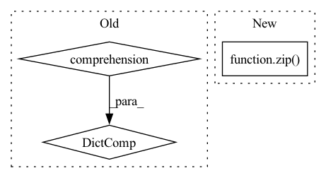

Pattern ID :7630
Before Change
:return: Dictionary to store the masks currently created by this object. The
mapping is param_name -> mask
return {
module_mask.name: module_mask.param_mask
for module_mask in self._module_masks
}
def load_state_dict(self, state_dict: Dict[str, Tensor]):
Loads the given state dict into this object"s modifiersAfter Change
mapping is param_name -> mask
return OrderedDict(
zip( self._module_masks.names, self._module_masks.param_masks)
)
def load_state_dict(self, state_dict: Dict[str, Tensor]):
In pattern: SUPERPATTERN
Frequency: 7
Non-data size: 3
Instances Fragment ID: 25302482
Project Name: neuralmagic/sparseml
Commit Name: fe5523fe7887a86a5909fd72a531f4577fab358a
Time: 2021-04-09
Author: bfineran@users.noreply.github.com
File Name: src/sparseml/pytorch/optim/modifier_pruning.py
M Class Name: GMPruningModifier
N Class Name: GMPruningModifier
M Method Name: state_dict(1)
N Method Name: state_dict(1)
M Parent Class: ScheduledUpdateModifier
N Parent Class: ScheduledUpdateModifier
M File Name: src/sparseml/pytorch/optim/modifier_pruning.py
N File Name: src/sparseml/pytorch/optim/modifier_pruning.py
M Start Line: 399
M End Line: 401
N Start Line: 418
N End Line: 420
Before Change
entities = sorted(set(subjects).union(objects))
relations = sorted(set(relations))
entity_to_id: Dict[str, int] = {
value: key
for key, value in enumerate(entities)
}
rel_to_id: Dict[str, int] = {
value: key
for key, value in enumerate(relations)After Change
relation_labels = sorted(set(relations))
entity_ids = np.arange(len(entity_labels))
entity_label_to_id = dict(zip( entity_labels, entity_ids) )
relation_ids = np.arange(len(entity_labels))
relation_label_to_id = dict(zip(relation_labels, relation_ids)) Fragment ID: 25302481
Project Name: pykeen/pykeen
Commit Name: f8ab466bf17f6bef6e10c2427cd0a06cb926a8ca
Time: 2019-08-18
Author: berrendorf@dbs.ifi.lmu.de
File Name: src/poem/preprocessing/utils.py
M Class Name: AnonimousClass
N Class Name: AnonimousClass
M Method Name: create_entity_and_relation_mappings(1)
N Method Name: create_entity_and_relation_mappings(1)
M Parent Class:
N Parent Class:
M File Name: src/poem/preprocessing/utils.py
N File Name: src/poem/preprocessing/utils.py
M Start Line: 31
M End Line: 44
N Start Line: 32
N End Line: 46
Before Change
)
if self.engine_type == ORT_ENGINE:
inputs = {k: v for k, v in inputs.items() if k in self.input_names}
return self.model.run(None, inputs)
elif self.engine_type == DEEPSPARSE_ENGINE:
return self.model.run([inputs[name] for name in self.input_names])
// TODO: torchAfter Change
// TODO: filter by valid name
// inputs = {k: v for k, v in inputs.items() if k in self.input_names}
return self.model.run(None, dict(zip( self.input_names, inputs.values()) ))
elif self.engine_type == DEEPSPARSE_ENGINE:
return self.model.run(list(inputs.values()))
// TODO: torch Fragment ID: 25302484
Project Name: neuralmagic/deepsparse
Commit Name: 72e7d146042526d6dcd0a6e266dd300911ee934e
Time: 2021-07-16
Author: bfineran@users.noreply.github.com
File Name: examples/huggingface-transformers/pipelines.py
M Class Name: Pipeline
N Class Name: Pipeline
M Method Name: _forward(3)
N Method Name: _forward(3)
M Parent Class: _ScikitCompat
N Parent Class: _ScikitCompat
M File Name: examples/huggingface-transformers/pipelines.py
N File Name: examples/huggingface-transformers/pipelines.py
M Start Line: 246
M End Line: 256
N Start Line: 250
N End Line: 252
Before Change
:return: Dictionary to store the masks currently created by this object. The
mapping is param_name -> mask
return {
module_mask.name: module_mask.param_mask
for module_mask in self._module_masks
}
def load_state_dict(self, state_dict: Dict[str, Tensor]):
Loads the given state dict into this object"s modifiersAfter Change
mapping is param_name -> mask
return OrderedDict(
zip( self._module_masks.names, self._module_masks.param_masks)
)
def load_state_dict(self, state_dict: Dict[str, Tensor]):
Fragment ID: 25302485
Project Name: neuralmagic/sparseml
Commit Name: fe5523fe7887a86a5909fd72a531f4577fab358a
Time: 2021-04-09
Author: bfineran@users.noreply.github.com
File Name: src/sparseml/pytorch/optim/modifier_pruning.py
M Class Name: ConstantPruningModifier
N Class Name: ConstantPruningModifier
M Method Name: state_dict(1)
N Method Name: state_dict(1)
M Parent Class: ScheduledModifier
N Parent Class: ScheduledModifier
M File Name: src/sparseml/pytorch/optim/modifier_pruning.py
N File Name: src/sparseml/pytorch/optim/modifier_pruning.py
M Start Line: 152
M End Line: 154
N Start Line: 155
N End Line: 157
Before Change
truncation_strategy="longest_first",
)
tensors = {k: paddle.to_tensor(v) for (k, v) in features.items()}
with paddle.no_grad():
if self.use_en:
similarity_scores = self.transformer_model.matching_v2(**tensors).numpy()After Change
preds = []
for cur_queries, cur_docs in batches:
datasets = []
for query, doc in zip( cur_queries, cur_docs) :
if self.embed_title:
datasets.append([query, doc.meta["name"] + doc.content])
else: Fragment ID: 25302491
Project Name: paddlepaddle/paddlenlp
Commit Name: 35be940d8e29d002d830da63c5923f63b0ec4d5d
Time: 2023-03-06
Author: w5688414@gmail.com
File Name: pipelines/pipelines/nodes/ranker/ernie_ranker.py
M Class Name: ErnieRanker
N Class Name: ErnieRanker
M Method Name: predict_batch(5)
N Method Name: predict_batch(5)
M Parent Class: BaseRanker
N Parent Class: BaseRanker
M File Name: pipelines/pipelines/nodes/ranker/ernie_ranker.py
N File Name: pipelines/pipelines/nodes/ranker/ernie_ranker.py
M Start Line: 159
M End Line: 177
N Start Line: 150
N End Line: 159
Before Change
else:
features = model_surgery.get_pyramide_feature_layers(backbone)
fpn_features = [features[id] for id in features_pick]
print(">>>> features:", {ii.name: ii.output_shape for ii in fpn_features} )
print(">>>> num_anchors:", num_anchors)
fpn_features = [ii.output for ii in fpn_features]
After Change
features = model_surgery.get_pyramide_feature_layers(backbone)
fpn_features = [features[id] for id in features_pick]
feature_names, fpn_features = model_surgery.align_pyramide_feature_output_by_image_data_format(fpn_features)
print(">>>> features:", {ii: jj.shape for ii, jj in zip( feature_names, fpn_features) })
print(">>>> num_anchors:", num_anchors)
// Build additional input features that are not from backbone. Fragment ID: 25302488
Project Name: leondgarse/keras_cv_attention_models
Commit Name: 4d4ea978b42024953a1eba7469530dec223545e0
Time: 2023-02-14
Author: leondgarse@gmail.com
File Name: keras_cv_attention_models/efficientdet/efficientdet.py
M Class Name: AnonimousClass
N Class Name: AnonimousClass
M Method Name: EfficientDet(22)
N Method Name: EfficientDet(22)
M Parent Class:
N Parent Class:
M File Name: keras_cv_attention_models/efficientdet/efficientdet.py
N File Name: keras_cv_attention_models/efficientdet/efficientdet.py
M Start Line: 168
M End Line: 200
N Start Line: 180
N End Line: 225
Before Change
@staticmethod
def compute_action_log_probs(policy_output: PolicyOutput, actions: Dict[StepKeyType, TorchActionType]):
TODO
return {kk: vv.log_prob(actions[kk]) for kk, vv in policy_output.prob_dist.items()}
def compute_substep_policy_output(self, observation: ObservationType, actor_id: ActorID = None,
temperature: float = 1.0, deterministic: bool = False) -> PolicySubStepOutput:
TODO:After Change
:return: The computed action log probabilities.
assert len(policy_output.prob_dist) == len(actions)
return [pb.log_prob(ac) for pb, ac in zip( policy_output.prob_dist, actions) ]
def compute_substep_policy_output(self, observation: ObservationType, actor_id: ActorID = None,
temperature: float = 1.0) -> PolicySubStepOutput: Fragment ID: 25302493
Project Name: enlite-ai/maze
Commit Name: 94c46a730931690fe7525bf0e52113a9d3230030
Time: 2021-06-24
Author: office@enlite.ai
File Name: maze/core/agent/torch_policy.py
M Class Name: TorchPolicy
N Class Name: TorchPolicy
M Method Name: compute_action_log_probs(2)
N Method Name: compute_action_log_probs(2)
M Parent Class: TorchModel,Policy
N Parent Class: TorchModel,Policy
M File Name: maze/core/agent/torch_policy.py
N File Name: maze/core/agent/torch_policy.py
M Start Line: 333
M End Line: 333
N Start Line: 335
N End Line: 336